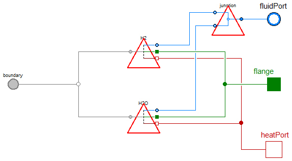
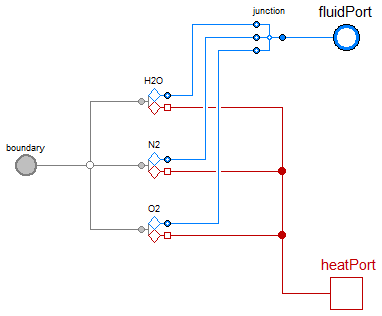
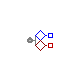
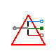
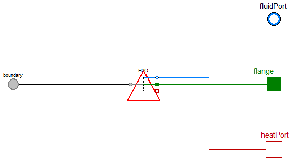

FCSys

Table of Contents
- User's Guide
- Blocks
- Conditions
- Assemblies
- Regions
- Subregions
- Phases
- Species
- Chemistry
- Connectors
- Characteristics
- Units
- Quantities
- Utilities
- Icons
Download
- Latest: v0.2.5 (2014-01-23)
FCSys.Conditions.Adapters.MSL.Phases
Adapters for material phasesInformation
Extends from Modelica.Icons.Package (Icon for standard packages).Package Content
| Name | Description |
|---|---|
| AnodeGas | Adapter for PEMFC anode gas between FCSys and Modelica |
| CathodeGas | Adapter for PEMFC cathode gas between FCSys and Modelica |
| Graphite | Adapter for graphite between Modelica and FCSys |
| Adapter for liquid between FCSys and Modelica |
 FCSys.Conditions.Adapters.MSL.Phases.AnodeGas
FCSys.Conditions.Adapters.MSL.Phases.AnodeGas
Adapter for PEMFC anode gas between FCSys and Modelica

Information
Extends from FCSys.Icons.Names.Top2.
Parameters
| Type | Name | Default | Description |
|---|---|---|---|
| Material properties | |||
| replaceable package Medium | Media.AnodeGas | Medium model (Modelica) | |
Connectors
| Type | Name | Description |
|---|---|---|
| FluidPort_b | fluidPort | Modelica fluid port |
| BoundaryBus | boundary | FCSys boundary connector |
| HeatPort_b | heatPort | Modelica heat port |
| Material properties | ||
| replaceable package Medium | Medium model (Modelica) | |
Modelica definition
model AnodeGas "Adapter for PEMFC anode gas between FCSys and Modelica" extends FCSys.Icons.Names.Top2; replaceable package Medium = Media.AnodeGas constrainedby Modelica.Media.Interfaces.PartialMedium "Medium model (Modelica)"; Domains.FluidNeutral H2(redeclare package Medium = Modelica.Media.IdealGases.SingleGases.H2, redeclare package Data = Characteristics.H2.Gas); Domains.FluidNeutral H2O(redeclare package Data = Characteristics.H2O.Gas, redeclare final package Medium = Modelica.Media.IdealGases.SingleGases.H2O); Junctions.Junction2 junction; Modelica.Fluid.Interfaces.FluidPort_b fluidPort(redeclare final package Medium = Medium) "Modelica fluid port"; Connectors.BoundaryBus boundary "FCSys boundary connector"; Modelica.Thermal.HeatTransfer.Interfaces.HeatPort_b heatPort "Modelica heat port"; equation // H2 connect(H2.boundary, boundary.H2); connect(H2.heatPort, heatPort); connect(H2.fluidPort, junction.purePort1); // H2O connect(H2O.boundary, boundary.H2O); connect(H2O.heatPort, heatPort); connect(H2O.fluidPort, junction.purePort2); // Mixture connect(junction.mixturePort, fluidPort); end AnodeGas;
FCSys.Conditions.Adapters.MSL.Phases.CathodeGas
Adapter for PEMFC cathode gas between FCSys and Modelica

Information
Extends from FCSys.Icons.Names.Top2.
Parameters
| Type | Name | Default | Description |
|---|---|---|---|
| Material properties | |||
| replaceable package Medium | Media.CathodeGas | Medium model (Modelica) | |
Connectors
| Type | Name | Description |
|---|---|---|
| FluidPort_b | fluidPort | Modelica fluid port |
| BoundaryBus | boundary | FCSys boundary connector for shear force |
| HeatPort_b | heatPort | Modelica heat port |
| Material properties | ||
| replaceable package Medium | Medium model (Modelica) | |
Modelica definition
model CathodeGas "Adapter for PEMFC cathode gas between FCSys and Modelica" extends FCSys.Icons.Names.Top2; replaceable package Medium = Media.CathodeGas constrainedby Modelica.Media.Interfaces.PartialMedium "Medium model (Modelica)"; Junctions.Junction3 junction( redeclare package Medium1 = Modelica.Media.IdealGases.SingleGases.H2O, redeclare package Medium2 = Modelica.Media.IdealGases.SingleGases.N2, redeclare package Medium3 = Modelica.Media.IdealGases.SingleGases.O2, redeclare package MixtureMedium = Medium); Domains.FluidNeutral H2O(redeclare package Data = Characteristics.H2O.Gas, redeclare final package Medium = Modelica.Media.IdealGases.SingleGases.H2O); Domains.FluidNeutral N2(redeclare package Data = Characteristics.N2.Gas, redeclare final package Medium = Modelica.Media.IdealGases.SingleGases.N2); Domains.FluidNeutral O2(redeclare package Data = Characteristics.O2.Gas, redeclare final package Medium = Modelica.Media.IdealGases.SingleGases.O2); Modelica.Fluid.Interfaces.FluidPort_b fluidPort(redeclare final package Medium = Medium) "Modelica fluid port"; Connectors.BoundaryBus boundary "FCSys boundary connector for shear force"; Modelica.Thermal.HeatTransfer.Interfaces.HeatPort_b heatPort "Modelica heat port"; equation // H2O connect(H2O.boundary, boundary.H2O); connect(H2O.fluidPort, junction.purePort1); connect(H2O.heatPort, heatPort); // N2 connect(N2.boundary, boundary.N2); connect(N2.fluidPort, junction.purePort2); connect(N2.heatPort, heatPort); // O2 connect(O2.boundary, boundary.O2); connect(O2.fluidPort, junction.purePort3); connect(O2.heatPort, heatPort); // Mixture connect(junction.mixturePort, fluidPort); end CathodeGas;
 FCSys.Conditions.Adapters.MSL.Phases.Graphite
Adapter for graphite between Modelica and FCSys
Information
Extends from FCSys.Icons.Names.Top2.
Parameters
| Type | Name | Default | Description |
|---|---|---|---|
| Species | |||
| Boolean | 'inclC+' | true | Include C+ |
| Boolean | 'incle-' | true | Include e- |
Connectors
| Type | Name | Description |
|---|---|---|
| BoundaryBus | boundary | FCSys boundary connector |
| HeatPort_b | heatPort | Modelica heat port |
| NegativePin | pin | Modelica electrical pin |
Modelica definition
model Graphite "Adapter for graphite between Modelica and FCSys" extends FCSys.Icons.Names.Top2; parameter Boolean 'inclC+'=true "Include C+"; Domains.Thermal 'C+' if 'inclC+'; parameter Boolean 'incle-'=true "Include e-"; Domains.Electrical 'e-'(redeclare package Data = Characteristics.'e-'.Graphite) if 'incle-'; Connectors.BoundaryBus boundary "FCSys boundary connector"; Modelica.Thermal.HeatTransfer.Interfaces.HeatPort_b heatPort if 'inclC+' "Modelica heat port"; Modelica.Electrical.Analog.Interfaces.NegativePin pin if 'incle-' "Modelica electrical pin"; equation // C connect('C+'.boundary, boundary.'C+'); connect('C+'.heatPort, heatPort); // e- connect('e-'.boundary, boundary.'e-'); connect('e-'.pin, pin); end Graphite;
 FCSys.Conditions.Adapters.MSL.Phases.Liquid
Adapter for liquid between FCSys and Modelica Information
Extends from FCSys.Icons.Names.Top2.
Parameters
| Type | Name | Default | Description |
|---|---|---|---|
| Material properties | |||
| replaceable package Medium | Modelica.Media.Water.Constan… | Medium model (Modelica) | |
Connectors
| Type | Name | Description |
|---|---|---|
| FluidPort_b | fluidPort | Modelica fluid port |
| BoundaryBus | boundary | FCSys boundary connector |
| HeatPort_b | heatPort | Modelica heat port |
| Material properties | ||
| replaceable package Medium | Medium model (Modelica) | |
Modelica definition
model Liquid "Adapter for liquid between FCSys and Modelica" extends FCSys.Icons.Names.Top2; replaceable package Medium = Modelica.Media.Water.ConstantPropertyLiquidWater constrainedby Modelica.Media.Interfaces.PartialPureSubstance "Medium model (Modelica)"; Domains.FluidNeutral H2O(redeclare package Data = Characteristics.H2O.Liquid, redeclare final package Medium = Medium); Modelica.Fluid.Interfaces.FluidPort_b fluidPort(redeclare final package Medium = Medium) "Modelica fluid port"; Connectors.BoundaryBus boundary "FCSys boundary connector"; Modelica.Thermal.HeatTransfer.Interfaces.HeatPort_b heatPort "Modelica heat port"; equation // H2O connect(H2O.boundary, boundary.H2); connect(H2O.heatPort, heatPort); connect(H2O.fluidPort, fluidPort); end Liquid;